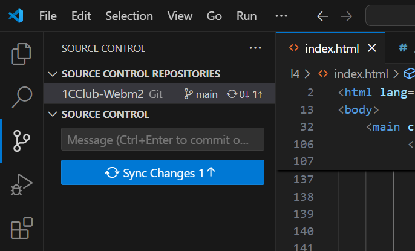

Домашнее задание: Работа с Git и GitHub
Шаг 1: Подготовка к работе
-
Войдите в свой аккаунт GitHub:
- Откройте браузер и перейдите на GitHub.
- Введите логин и пароль от аккаунта, который вы создали на первом модуле.
- Если вы забыли данные для входа, воспользуйтесь функцией восстановления пароля.
-
Скачайте и установите Git:
- Перейдите на официальный сайт Git: https://git-scm.com.
- Скачайте установщик для вашей операционной системы (Windows, macOS или Linux).
- Установите Git, следуя инструкциям установщика.
-
Убедитесь, что Git работает:
- Откройте терминал (или командную строку на Windows).
- Введите команду:

- Если вы видите версию Git (например, git version 2.40.1), значит, Git установлен правильно.
-
Настройка Git:
- Настройте имя пользователя и email, которые будут использоваться для коммитов:
- Замените "Your Name" на ваше имя пользователя на GitHub.
- Замените "yourname@example.com" на почту, которую вы использовали при регистрации на GitHub.
- Настройте имя пользователя и email, которые будут использоваться для коммитов:
Шаг 2: Клонирование репозитория
-
Найдите репозиторий с пятнашками:
- На GitHub найдите репозиторий с игрой "Пятнашки", который вы создали на первом модуле.
-
Скопируйте ссылку для клонирования:
- Нажмите на синюю кнопку "Code" на странице репозитория.
- Выберите вариант "HTTPS" и скопируйте ссылку.
-
Клонируйте репозиторий:
- Откройте VS Code или терминал.
- Создайте папку на компьютере, куда вы хотите скачать репозиторий.
- В терминале выполните команду:
- Замените ссылку на ту, которую вы скопировали.
- После выполнения команды в указанной папке появится копия репозитория.
Шаг 3: Внесение изменений
-
Откройте проект в VS Code:
- Откройте папку с клонированным репозиторием в VS Code.
- VS Code автоматически определит Git-репозиторий.
-
Внесите изменения:
- Выберите один из файлов (например, index.html, style.css или script.js) и внесите небольшие изменения.
- Добавьте новый элемент на страницу (например, заголовок с текстом "Мои пятнашки").
- Измените цвет фона в CSS.
- Добавьте комментарий в JavaScript-файл.
- Сохраните изменения.
Шаг 4: Создание коммита
-
Перейдите во вкладку с изображением графа в VS Code. Здесь вы увидите действия, связанные с контролем версий, в частности, ваш репозиторий и изменения, которые вы внесли.
-
Создайте коммит через интерфейс VS Code:
- В поле Message напишите сообщение, которое будет прикреплено к коммиту.
- Нажмите на кнопку Commit.
- После создания коммита нажмите кнопку Sync Changes, чтобы отправить изменения на GitHub.
